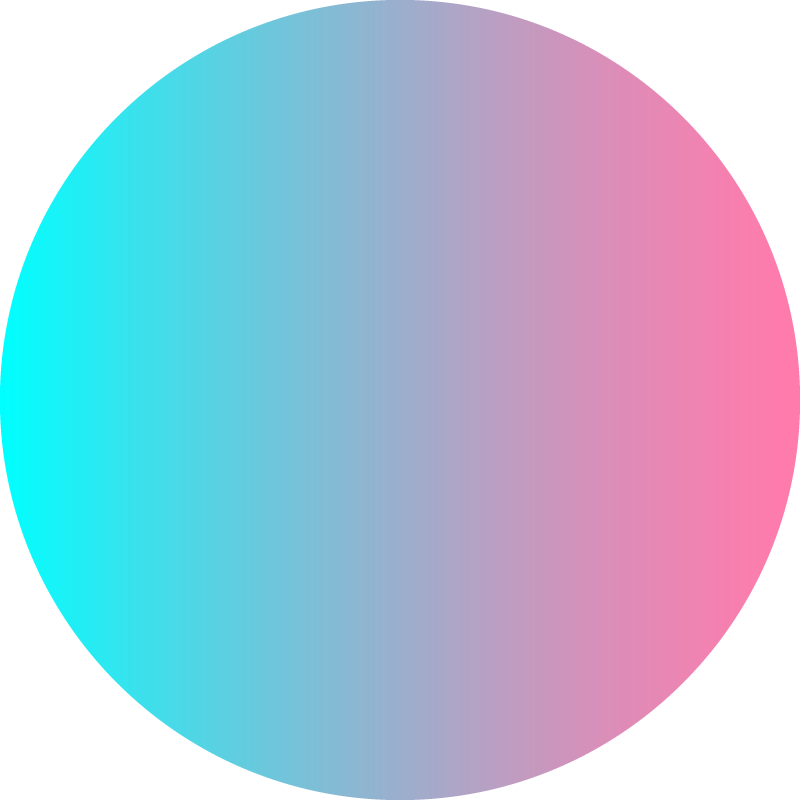
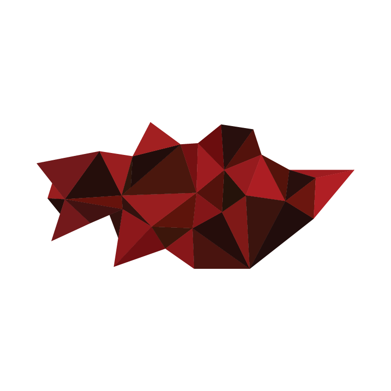
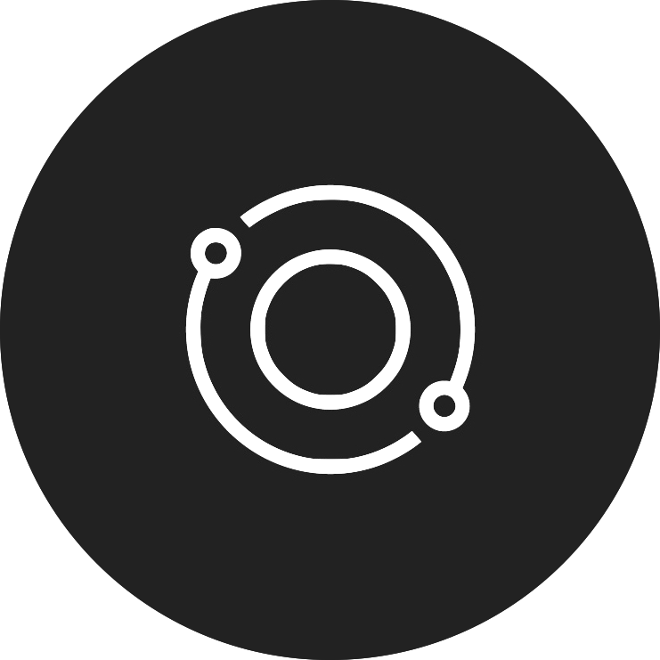

Amritha N. Jayanti
PROJECTS

Founder, Executive Director
July 2015 - April 2017 (as director)
I founded Technica, UMD’s all-women hackathon, in 2015. The event has grown to be the largest all-women hackathon in the world, bringing in almost 900 hackers and over $130,000 in sponsorship money.

Executive Director
January 2017 - Current
Startup Shell is UMD’s student-run startup incubator. I was the executive director in 2016, and helped organize community events, build resource piplines with the rest of the entrepreneurial community on campus, and raise money for resources.
WORK

Product and Growth Intern
January 2017 - Current
Focusing on developing product, protocol, and strategies to improve the overall customer lifecycle.
Project Manager
November 2015 - June 2016
Facilitate the communication, organization, and overall operations for projects between Minimill, a design firm based out of NYC and DC, and our clients.
TAP Analyst Intern
June 2016 - August 2017 (3 months)
Conducted research and development for a new data management system within card services. Explored bleeding-edge open source technologies, such as Hadoop, Spark, NiFi, and Zeppelin.
INTERESTS
Women/minorities in the technology industry
Technology policy
Dancing (indian classical dance: bharatnatyam, modern, ballet, hip-hop)
Reading (most recent reads: The Undoing Project, The Palace of Illusions, Fooling Houdini, The New Jim Crow)